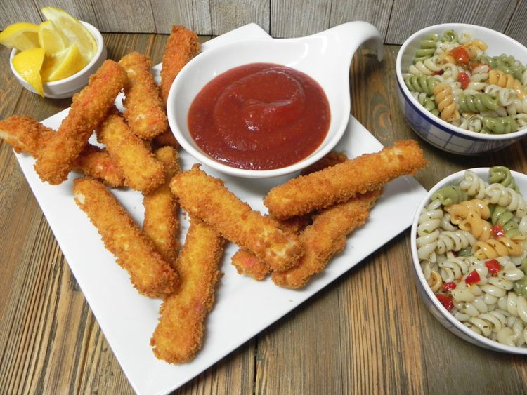

Crispy Fried Crab Sticks
When you crave crab but can’t swing the real deal, these fried imitation crab legs hit the spot. Look for “leg style” imitation crab in the freezer section. Imitation crab tends to be on the sweet side, so I serve them with lemon wedges and cocktail sauce, but feel free to dip them in sweet chili sauce if you like things sweeter.

Ingredients
- 1/2 cup all-purpose flour
- 2 large eggs, beaten
- 2 cups panko bread crumbs
- 1 (10.8 ounce package) imitation crab legs, cut in half widthwise
- oil for frying
Directions
- Heat oil in a deep-fryer (such as a FryDaddy®) or a large saucepan to 350 degrees F (175 degrees C).
- Place flour in a shallow bowl. Place eggs in a second bowl, and panko in a third bowl. Dredge each crab leg in flour, then into egg, and then in panko to coat; place on a plate.
- Fry crab in small batches until crisp, about 1 minute. Remove with tongs or a slotted spoon and drain on paper towels.